戦国乙女5 業火を穿つ宿焔の双刃
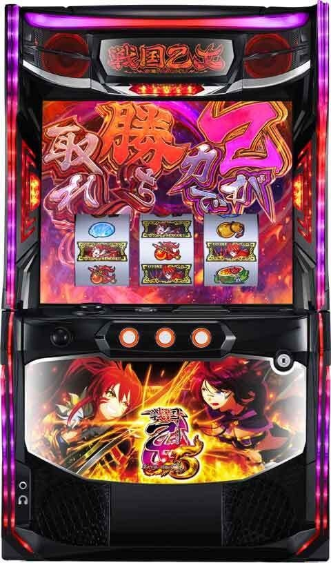
【天井情報】
通常時を最大999G＋α消化、または最大6周期（1周期は加算込み最大500G）でATに当選。
設定変更（リセット）の恩恵
ゲーム数天井が650Gに短縮（実ゲーム数）
天井周期が最大4周期に短縮
巫女ポイントをランダム加算（0到達で表示）
【リセット判別】
不明
【有利区間について】
エンディング等で有利区間をリセットした場合は上位CZ「剣聖チャンス」に突入。
狙い目
【リセット狙い】
ゲーム数天井
270Gから（周期や液晶ゲーム数が進んでいない想定）
※液晶メニュー画面からATハマりゲーム数確認可能
周期天井
3周期目から
【ゲーム数天井狙い】
640Gから（周期や液晶ゲーム数が進んでいない想定）
※液晶メニュー画面からATハマりゲーム数確認可能
【周期別周期狙い】
1周期 液晶140Gから
2.3周期 液晶395Gから
4周期 液晶380Gから
5周期以降 「周期天井狙い」へ
※1周期目は最大200G。
※液晶400Gを超えると次回モードB以上。
※チャンスモード（50G天井）まで到達するとモード転落する。
【モード予測と狙い目】
モードCの場合はチャンスモード（50Gゾーン天井）に移行するまで打って良さそう？
1周期以外で液晶100Gゾーンでの前兆「繚乱の刻」移行した場合はモードC？
※周期回到達でデータ機に信号が上がらないため履歴からの判別は不可。ただし目視で液晶100G/300Gゾーン当選または前兆ステージ移行確認時はモードBorC濃厚と思われる。
※チャンスモードまで転落なしの仕様を叩くなら、この挙動を確認した後は次回ボーダーを下げて立ち回り可能と思われる。
※強カワチャンスでゲーム数加算される仕様のため液晶のゲーム数で判断。
【周期天井狙い】
5周期目から
周期テーブルB以上濃厚 AT当選まで？
【巫女カウンター】
残り70ptから
【示唆関連の押し引きについて】
乙女ストラップ（同じキャラ3人の場合）
ヒデヨシ、ミツヒデ、ヨシテル AT当選まで
ゴエモン 液晶100Gから
AT終了画面
敵集合、乙女4人、乙女集合A、乙女集合B AT当選まで
アイキャッチ
カンスケ（緑背景のキャラ） 当該周期打てそう
ヒデヨシのセリフ
吉兆だぁ 当該周期打てそう
ゴエモン依頼ポイント
ポイント蓄積・大なら解放まで？
【有利区間関連狙い】
不明
やめ時
AT終了画面やアイキャッチ、巫女カウンターなど続行する要素が無ければ1G回してやめ。
その他
データ確認方法
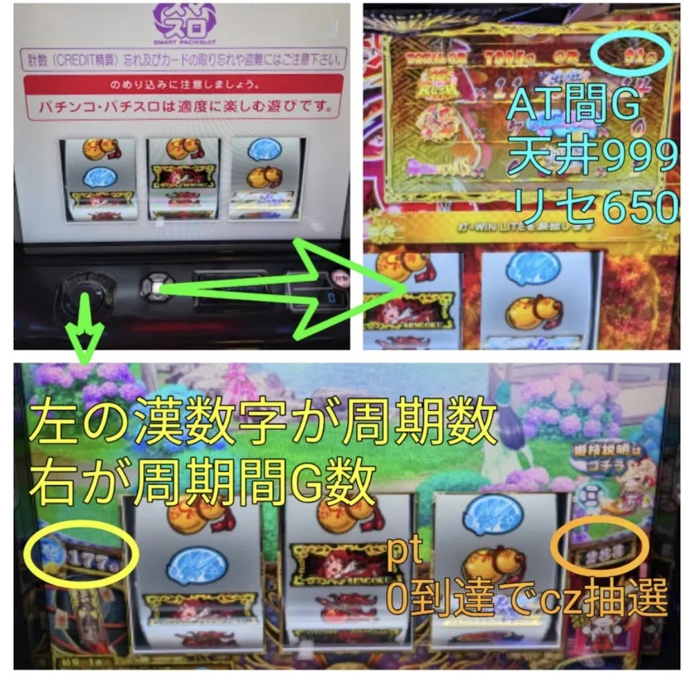
参考元 すろぬー（Xから）
周期テーブル
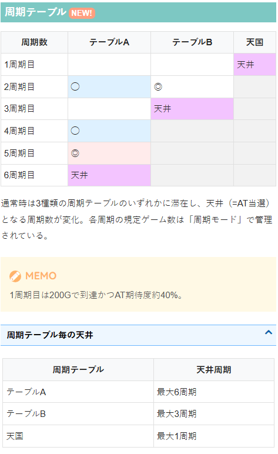
周期モード
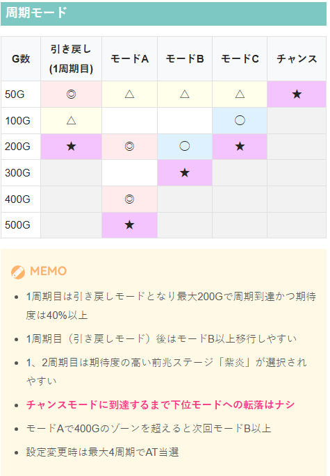
巫女カウンター
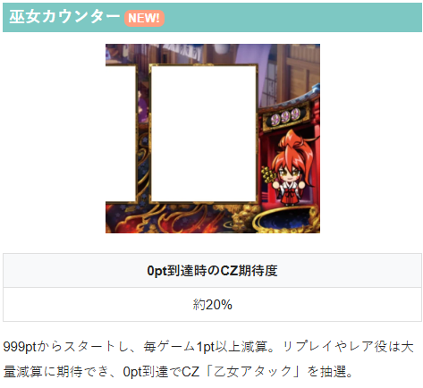
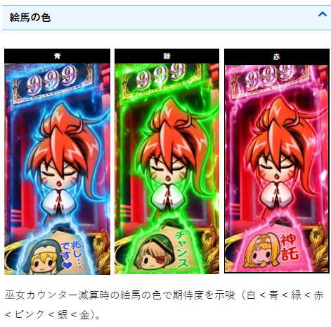
AT終了画面
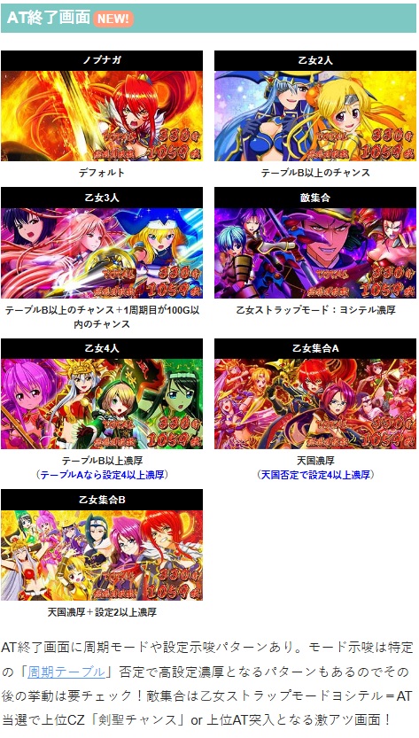
乙女ストラップモード
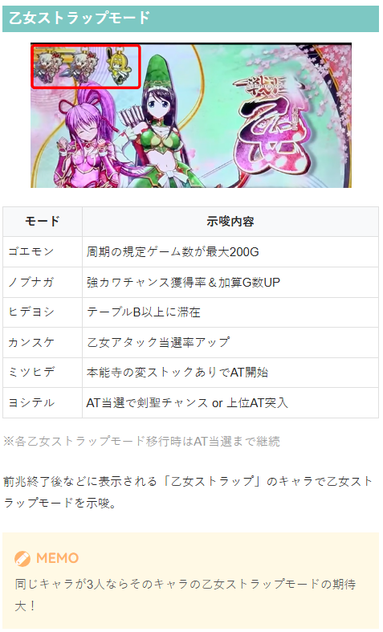
ヒデヨシのセリフ
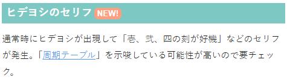
アイキャッチ
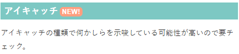
ゴエモン依頼ポイント
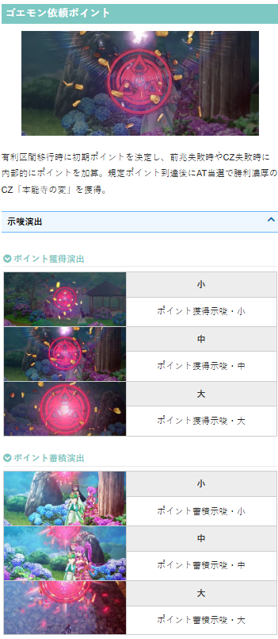
ヒデヨシのセリフ
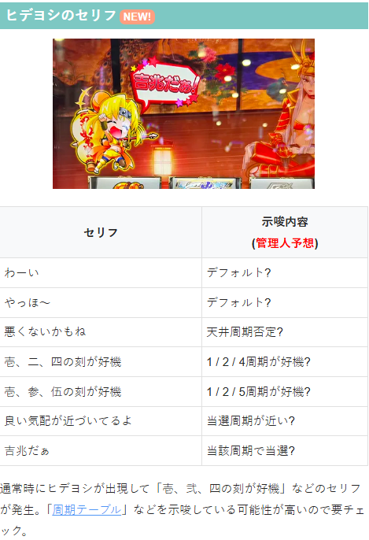
参考元
かめとうさぎのパチスロブログ